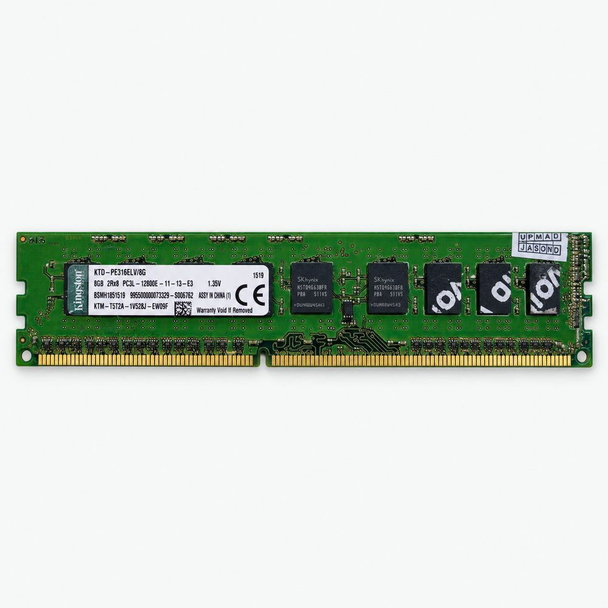

Memórias · Usado
Memória RAM 8GB DDR3L 1600MHz ECC Unbuffered UDIMM Servidor Kingston
R$180A compra, o frete e o pagamento são feitos pela plataforma do anúncio. Somente envio. Confira lá a disponibilidade e o valor atual. Devolução em até 7 dias após o recebimento (direito de arrependimento), pela plataforma da compra.
- Marca
- Kingston
- Modelo
- KTD-PE316ELV/8G
- Part number
- KTD-PE316ELV/8G
- Estado
- Usado
- O que acompanha
- 1 módulo Kingston 8GB ECC UDIMM (KTD-PE316ELV/8G)
Descrição
Memória RAM 8GB DDR3L 1600MHz ECC Unbuffered Kingston KTD-PE316ELV/8G para servidor, módulo único.
Para que serve
Para servidores e workstations que usam memória DDR3L ECC Unbuffered (UDIMM), como os servidores de entrada com processador Xeon E3. É a versão Unbuffered, bem mais rara no mercado de usados que a Registered.
Especificações
- Capacidade: 8GB em 1 módulo
- Tipo: DDR3L, 1,35V (baixa tensão)
- Frequência: 1600MHz (PC3L-12800E)
- Latência: CL11
- Organização: 2Rx8, dual rank
- Formato: ECC Unbuffered DIMM (UDIMM), 240 pinos
- Modelo: KTD-PE316ELV/8G, linha Kingston System Specific para Dell
- Equivalente Dell: A7990613
- Chips SK hynix, lote 1519
Itens inclusos
- 1 módulo de memória Kingston 8GB ECC UDIMM (KTD-PE316ELV/8G)
Compatibilidade
Indicada para os servidores Dell PowerEdge T110 II, R210 II, T610 e R610. Serve também em servidores e workstations que aceitem memória DDR3L ECC Unbuffered de 1,35V.
Estado
Usada, testada e funcionando. Contatos dourados limpos, sem oxidação.
Envio e pagamento
Envio para todo o Brasil pela OLX Entrega, com frete calculado pela OLX. Pagamento pela própria OLX.
Dúvidas
Me chame pelo chat da OLX com o modelo do seu servidor que eu confiro a compatibilidade.